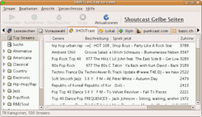

Streamtuner
Archivierte Anleitung
Dieser Artikel wurde archiviert, da er - oder Teile daraus - nur noch unter einer älteren Ubuntu-Version nutzbar ist. Diese Anleitung wird vom Wiki-Team weder auf Richtigkeit überprüft noch anderweitig gepflegt. Zusätzlich wurde der Artikel für weitere Änderungen gesperrt.
Anmerkung: Alternative Programme sind im Artikel Internetradio aufzeichnen zu finden.
Zum Verständnis dieses Artikels sind folgende Seiten hilfreich:
 Radiosendungen und Musikstreams aus dem Internet für den privaten Bedarf aufzuzeichnen ist eine legale Form, die eigene Musiksammlung zu erweitern. Für das Kommandozeilenprogramm Streamripper gibt eine Reihe von grafischen Werkzeugen, von denen Streamtuner das älteste ist.
Radiosendungen und Musikstreams aus dem Internet für den privaten Bedarf aufzuzeichnen ist eine legale Form, die eigene Musiksammlung zu erweitern. Für das Kommandozeilenprogramm Streamripper gibt eine Reihe von grafischen Werkzeugen, von denen Streamtuner das älteste ist.
Streamtuner  liest aktuell nur noch das Sender-Verzeichnis von Icecast (Xiph) aus und zeigt darüber diverse internationale Internet-Radiosender an. In der Vergangenheit konnte auch auf SHOUTcast, Basic.ch, Punkcast, Google Stations und Live365 zugegriffen werden. Bei Kenntnis der Stream-Adresse kann man eigene Lesezeichen anlegen.
liest aktuell nur noch das Sender-Verzeichnis von Icecast (Xiph) aus und zeigt darüber diverse internationale Internet-Radiosender an. In der Vergangenheit konnte auch auf SHOUTcast, Basic.ch, Punkcast, Google Stations und Live365 zugegriffen werden. Bei Kenntnis der Stream-Adresse kann man eigene Lesezeichen anlegen.
Streamtuner wird seit längerem nicht mehr weiter entwickelt. Die aktuelle Version ist von Dezember 2004 und funktioniert bis auf die eingeschränkte Auswahl von Sender-Verzeichnissen immer noch hervorragend.
Installation¶
 Das Programm ist bis Ubuntu 11.10 in den offiziellen Paketquellen enthalten. Es müssen die folgenden Pakete installiert werden [1]:
Das Programm ist bis Ubuntu 11.10 in den offiziellen Paketquellen enthalten. Es müssen die folgenden Pakete installiert werden [1]:
streamtuner (universe)
streamripper (universe)
mpegdemux (universe)
gstreamer0.10-fluendo-mpegdemux (universe)
 mit apturl
mit apturl
Paketliste zum Kopieren:
sudo apt-get install streamtuner streamripper mpegdemux gstreamer0.10-fluendo-mpegdemux
sudo aptitude install streamtuner streamripper mpegdemux gstreamer0.10-fluendo-mpegdemux
Nach der Installation findet man einen Menüeintrag zum Start des Programms unter "Anwendungen -> Multimedia -> Streamtuner" oder "Anwendungen -> Unterhaltungsmedien -> Streamtuner".
Konfiguration¶
 Nach dem ersten Start sollte die Konfiguration überprüft werden. Unter dem Menüpunkt "Bearbeiten -> Einstellungen -> Anwendungen" ist der Punkt
Nach dem ersten Start sollte die Konfiguration überprüft werden. Unter dem Menüpunkt "Bearbeiten -> Einstellungen -> Anwendungen" ist der Punkt
"Einen Stream aufnehmen"
aufgeführt. Den dort gesetzten Wert bitte kontrollieren bzw. durch:
x-terminal-emulator -e streamripper %q -d /home/BENUTZERNAME/Musikordner -r -o never
ersetzen. Der BENUTZERNAME und der Musikordner müssen an das eigene System angepasst werden. Der Parameter -r öffnet einen Relay-Port, auf dem der Stream durch "streamripper" gesendet wird. Mit diesem Parameter ist es möglich, einen Stream gleichzeitig aufzunehmen und anzuhören, ohne ihn zweimal (= doppelt) herunterzuladen. Allerdings ist er nur auf dem eigenen Computer zu empfangen. Der Parameter -o never sorgt dafür, dass ältere Aufnahmen nicht versehentlich überschrieben werden. Sollte man zur Verbindung ins Internet einen Proxy-Server benötigen, so muss zu dieser Zeile auch noch -p http://proxyip:port hinzugefügt werden.
Auch wenn man nichts aufnehmen will, sollte man unter "Bearbeiten -> Einstellungen -> Anwendungen" bei den Punkten:
"eine .m3u Datei anhören"
"Einen Stream anhören"
den Audio-Player kontrollieren bzw. einstellen, gefolgt von einem %q. Also z.B. audacious2 %q für den Audio-Player Audacious. Dann wird über die Schaltfläche "Verbinden" (siehe unten) der ausgewählte Sender automatisch mit dem hinterlegten Programm geöffnet.
Konfigurationsdaten werden im (versteckten) Ordner ~/.streamtuner/ im Homeverzeichnis abgelegt.
Verwendung¶
 Sehr viel Auswahl bietet der Reiter "Xiph" (= Icecast Directory). Hier kann man nach bestimmten Stil- und Geschmacksrichtungen suchen. Klickt man im linken Fenster auf eine Stilrichtung, werden im rechten Fenster Sender aufgelistet, die entsprechende Musik (oder auch Nachrichten, Hörspiele usw.) streamen. Die Auswahl ist so groß, dass bestimmt für jeden etwas dabei ist. Hat man einen Sender gefunden, der dem eigenen Wünschen entspricht, so kann man diesen als Lesezeichen speichern. Hierzu genügt ein Rechtsklick auf den entsprechenden Eintrag. Im erscheinenden Kontextmenü wählt man "Lesezeichen hinzufügen". So kann man sich eine Liste seiner Lieblingssender zusammenstellen.
Anhören¶
Der ausgewählte Sender wird über die Schaltfläche "Verbinden" (den ausgewählten Stream anhören) mit dem eingetragenen Audioplayer abgespielt. Interessant ist unter Umständen noch der Zugriff auf die eigene Musiksammlung über die Registerkarte "Lokal".
Aufnahme¶
Nachdem ein Sender ausgewählt wurde, geht man auf "Aufnahme" (den ausgewählten Stream aufnehmen). Daraufhin öffnet sich Streamripper in einem Terminal-Fenster und speichert den Stream. Nun kann man die Adresse bzw. den Relay-Port "http://localhost:8000" z.B. mit dem Audioplayer Audacious öffnen, um den Stream, den Streamripper gerade aufzeichnet, anzuhören.
Möchte man die Aufnahme zu beenden, benutzt man die Tastenkombination Strg + C im Terminal-Fenster mit Streamripper.
Eigenes Lesezeichen erstellen¶
Der Vorgang ist leider unnötig komplex, aber nicht weiter schwierig, wenn man die Funktionsweise einmal verstanden hat. Um einen Sender selbst einzurichten, verwendet man den Menü-Punkt "Stream -> New Preselection" und ergänzt die folgenden Angaben:
"Name" - ein beliebiger Name
"Genere" - ein Übersetzungsfehler, gemeint ist die Musikrichtung (Genre)
"Homepage" - Beispiel:
http://www.mein_radiosender.de"URL" - Die Stream-Adresse (siehe Internetradio/Stationen)
Nun wird mit "Ok" ein neuer Eintrag auf der Registerkarte "Vorauswahl" erstellt. Erst über die rechte Maustaste  und die Auswahl von "Lesezeichen hinzufügen" erscheint der Eintrag in der Registerkarte "Lesezeichen". Dort bleibt er zwar erhalten, wenn man den Eintrag unter "Vorauswahl" wieder entfernt, aber bei einer nachträglichen Bearbeitung können die Angaben zur "Homepage" und zur "URL" nicht mehr geändert werden.
und die Auswahl von "Lesezeichen hinzufügen" erscheint der Eintrag in der Registerkarte "Lesezeichen". Dort bleibt er zwar erhalten, wenn man den Eintrag unter "Vorauswahl" wieder entfernt, aber bei einer nachträglichen Bearbeitung können die Angaben zur "Homepage" und zur "URL" nicht mehr geändert werden.
In der Praxis bedeutet das: am einfachsten verwaltet man eigene Lesezeichen ausschließlich über die Registerkarte "Vorauswahl".
Hinweis:
Bei der Stream-Adresse muss man unter Umständen aufpassen: mancher Audioplayer erwartet keine Wiedergabeliste (z.B. .m3u), sondern eine "echte" Adresse (z.B. http://67.159.60.19:8080/). Diese URL ist aus der Playliste ablesbar, wenn man diese mit einem Editor öffnet.
Problembehebung¶
SHOUTcast¶
In der Vergangenheit gab es immer wieder Probleme beim Zugriff auf SHOUTcast . Eine Zeitlang konnten noch diverse Tipps und Patches das Problem beheben. Inzwischen ist klar, dass sich daran aufgrund der restriktiven Lizenzpolitik von SHOUTcast (siehe Press Release about SHOUTcast Removal in VLC ) nichts mehr ändern wird – sprich: SHOUTcast kann mit Streamtuner nicht mehr genutzt werden.
Man kann den Reiter daher über "Bearbeiten -> Einstellungen -> Plugins" einfach deaktivieren.
Links¶
Internetradio/Stationen - Liste mit etlichen Streams und Links zu Radiostationen-Verzeichnissen
Internetradio aufzeichnen
 Übersichtsseite
Übersichtsseite
- Erstellt mit Inyoka
-
 2004 – 2017 ubuntuusers.de • Einige Rechte vorbehalten
2004 – 2017 ubuntuusers.de • Einige Rechte vorbehalten
Lizenz • Kontakt • Datenschutz • Impressum • Serverstatus -
Serverhousing gespendet von